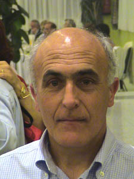

Carlos Gómez Arroyo
Carlos Gómez Arroyo  Carlos Gómez Arroyo
Carlos Gómez Arroyo 
 Haz clic aquí para detalles de la Familia de Carlos con María (Mani) Dávila Martín
Haz clic aquí para detalles de la Familia de Carlos con María (Mani) Dávila Martín
This page is within a frameset. View the entire genealogy report of Gómez Arroyo families, or surname index of Gómez Arroyo pedigrees or report summary of Gómez Arroyo heritage from "Árbol Genealógico de Manolo y Amalia".
Genogram Examples.
© 2006 GenoPro Inc. All Rights Reserved.